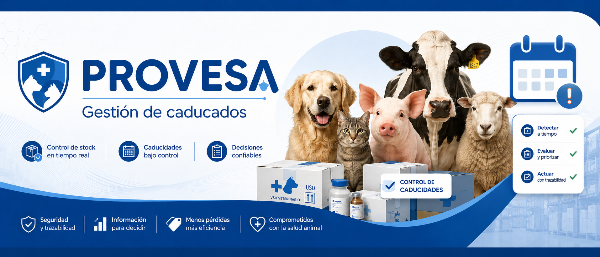

Selecciona primero el almacén 01 o 02. Cada exportación respeta el almacén y los filtros activos compatibles.
Marca líneas como En trámite o En oferta. Si las devuelves a Pendiente, vuelven a la vista normal. Se guarda solo en este navegador.
Carga el Excel de SAP o modifica los filtros.